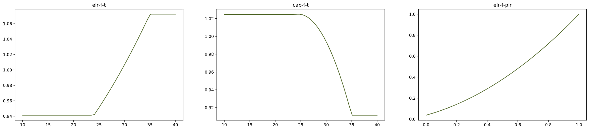

Quickstart Guide¶
This quickstart guide shows examples on how Copper can be used to generate sets of performance curves by either being imported as packaged or using its command line interface.
Using Copper as a package¶
In this example we will use Copper to generate chiller performance curves and by importing Copper as a package in a Python script.
First, let’s start by importing the necessary packages:
import copper as cp
import matplotlib.pyplot as plt
Second, let’s define the chiller. In this example, the chiller is a 300 ton constant speed water-cooled screw chiller with a targted efficiency of 0.650 kW/ton and an IPLV of 0.480 kW/ton. The chiller will be simulated using the entering condenser temperature model included in EnergyPlus. Copper assumes by default that the rated conditions follow the AHRI Standard 550/590. Note: curves can also be generated for the AHRI 551/591 standard or both.
chlr = cp.chiller(
ref_cap=300,
ref_cap_unit="ton",
full_eff=0.610,
full_eff_unit="kw/ton",
part_eff=0.520,
part_eff_unit="kw/ton",
sim_engine="energyplus",
model="ect_lwt",
compressor_type="screw",
condenser_type="water",
compressor_speed="constant",
)
Then, let’s generate a set of curves for it using Copper’s nearest_neighbor method.
set_of_curves = chlr.generate_set_of_curves(
vars=["eir-f-plr"], method="nearest_neighbor", tol=0.005
)
Finally, let’s plot the curves.
# Define plot and variables to plot
out_vars = ["eir-f-t", "cap-f-t", "eir-f-plr"]
fig, axes = plt.subplots(nrows=1, ncols=len(out_vars), figsize=(25, 5))
# Plotting space set of curves
chlr_perf_curves = cp.SetofCurves()
chlr_perf_curves.name = "Quickstart Guide Performance Curves"
chlr_perf_curves.eqp = chlr
chlr_perf_curves.curves = chlr.set_of_curves
chlr_perf_curves.plot(out_var=out_vars, axes=axes, color="darkolivegreen", alpha=1)
An example output would look like the figure below. The curves are plotted at rated chilled water temperature. In this example, the x-axis corresponds to the entering condenser temperature in degree C, and to the part load ratio.
Let’s verify that the set of curves that we generated actually corresponds to the targeted efficiencies.
print(
"Efficiency: {} kW/ton, IPLV: {} kW/ton.".format(
round(chlr.calc_rated_eff(eff_type="full"), 2),
round(chlr.calc_rated_eff(eff_type="part"), 2),
)
)
This will return Efficiency: 0.61 kW/ton, IPLV: 0.52 kW/ton..
The curves can now be exported to be used for example in an simulation using EnergyPlus.
chlr_perf_curves.export(fmt="idf", name=chlr_perf_curves.name)
Using Copper’s command line interface¶
Copper can be used via command line interface (CLI). A JSON file including the targeted equipment characteristics and functions to be called must be created and passed as an argument.
In this example we will generate performance curves for a 300 ton constant speed water-cooled screw chiller with a targted efficiency of 0.650 kW/ton and an IPLV of 0.480 kW/ton. The chiller will be simulated using the entering condenser temperature model included in EnergyPlus.
First, let’s create the JSON input file.
{
"Quickstart_Guide_Chiller": {
"eqp_type": "chiller",
"compressor_type": "screw",
"condenser_type": "water",
"compressor_speed": "constant",
"ref_cap": 300,
"ref_cap_unit": "ton",
"full_eff": 0.61,
"full_eff_unit": "kw/ton",
"part_eff": 0.52,
"part_eff_unit": "kw/ton",
"sim_engine": "energyplus",
"model": "ect_lwt",
"do": {
"generate_set_of_curves": {
"vars": ["eir-f-plr"],
"method": "nearest_neighbor",
"tol": 0.005,
"export_path": "./",
"export_format": "idf",
"export_name": "Quickstart_Guide_Chiller"
}
}
}
Then, let’s generate the curves using the CLI.
copper run in.JSON
This will produce a JSON similar to the following one which provides all information related to the curves generated by Copper.
{
"Quickstart_Guide_Chiller": {
"eir-f-t": {
"type": "bi_quad",
"ref_evap_fluid_flow": null,
"ref_cond_fluid_flow": null,
"ref_lwt": 6.67,
"ref_ect": 29.4,
"ref_lct": null,
"units": "si",
"x_min": 5.0,
"y_min": 24.0,
"x_max": 10.0,
"y_max": 35.0,
"out_min": 0.0,
"out_max": null,
"coeff1": 0.933884,
"coeff2": -0.058212,
"coeff3": 0.00450036,
"coeff4": 0.00243,
"coeff5": 0.000486,
"coeff6": -0.001215,
"coeff7": 0.0,
"coeff8": 0.0,
"coeff9": 0.0,
"coeff10": 0.0
},
"cap-f-t": {
"type": "bi_quad",
"ref_evap_fluid_flow": null,
"ref_cond_fluid_flow": null,
"ref_lwt": 6.67,
"ref_ect": 29.4,
"ref_lct": null,
"units": "si",
"x_min": 5.0,
"y_min": 24.0,
"x_max": 10.0,
"y_max": 35.0,
"out_min": 0.0,
"out_max": null,
"coeff1": 0.257896,
"coeff2": 0.0389016,
"coeff3": -0.00021708,
"coeff4": 0.0468684,
"coeff5": -0.00094284,
"coeff6": -0.00034344,
"coeff7": 0.0,
"coeff8": 0.0,
"coeff9": 0.0,
"coeff10": 0.0
},
"eir-f-plr": {
"type": "quad",
"ref_evap_fluid_flow": null,
"ref_cond_fluid_flow": null,
"ref_lwt": 6.67,
"ref_ect": 29.4,
"ref_lct": null,
"units": "si",
"x_min": 0.0,
"y_min": 0.0,
"x_max": 1.0,
"y_max": 1.0,
"out_min": 0.0,
"out_max": null,
"coeff1": 0.222903,
"coeff2": 0.313387,
"coeff3": 0.46371,
"coeff4": 0.0,
"coeff5": 0.0,
"coeff6": 0.0,
"coeff7": 0.0,
"coeff8": 0.0,
"coeff9": 0.0,
"coeff10": 0.0
}
}
}